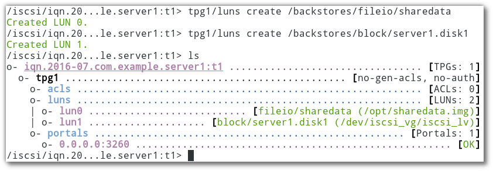
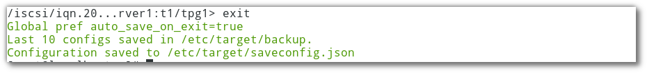

ISCSI Remote Storage¶
ISCSI¶
Disk Management¶
การทำสอบให้ใช้ Vagrantfile
vagrant ssh server1
sudo su -
step 1 Prepare¶
แบ่ง partition ให้แก่ disk /dev/vdb /dev/vdc /dev/vdd
fdisk /dev/vdb
Press 'p' to print partition table
Press 'n' to create a new partition
Press 'p' to create primary partition
Type Partition Number : 1
First Sector : PRESS ENTER
Last Sector : PRESS ENTER
Press 'p' to print partition tables again
Press 't' to change partition ID
Type your partition Number :1
Hex code Partition code : 8e
Press 'p' to print partition tables again
Press 'w' to save and exit
Note
ทำซ้ำ กับ /dev/vdc /dev/vdd หลังจากทำเสร็จแล้วให้สั่งคำสั่ง partprobe เพื่อบอกให้ kernel รับทราบการเปลี่ยนแปลงของ partition:
partprobe
step 2 Prepare¶
pvcreate /dev/vdb1
pvcreate /dev/vdc1
pvcreate /dev/vdd1
vgcreate iscsi_vg /dev/vdb1 /dev/vdc1 /dev/vdd1
lvcreate -l 100%FREE -n iscsi_lv iscsi_vg
vgs
(result)
VG #PV #LV #SN Attr VSize VFree
VolGroup00 1 2 0 wz--n- 39.50g 320.00m
iscsi_vg 3 1 0 wz--n- 59.99g 0
lvs
(result)
LV VG Attr LSize Pool Origin Data% Meta% Move Log Cpy%Sync Convert
LogVol00 VolGroup00 -wi-ao---- 37.69g
LogVol01 VolGroup00 -wi-ao---- 1.50g
iscsi_lv iscsi_vg -wi-a----- 59.99g
Install ISCSI server¶
Install¶
การใช้งานจะมี 2 ฝั่ง คือ server เป็นผู้ให้บริการ storage และ ฝั่ง client โดยที่ฝั่ง server ดำเนินการดังต่อไปนี้
yum install -y targetcli
targetcli
Warning: Could not load preferences file /root/.targetcli/prefs.bin.
targetcli shell version 2.1.fb41
Copyright 2011-2013 by Datera, Inc and others.
For help on commands, type 'help'.
/>
(หลังจาก run คำสั่งแล้วจะได้ prompt )
- step1 create backstores (target)
method1 แบบทีละขั้นตอน
/>ls
/>cd backstores
/>ls
/>cd block
/>create server1.disk1 /dev/iscsi_vg/iscsi_lv
/>ls
method2 แบบขั้นตอนเดียว
/> ls
/> backstores/block create server1.disk1 /dev/iscsi_vg/iscsi_lv
นอกจากการสร้าง backstore ให้สามารถใช้งาน disk แล้ว ยังสามารถสร้าง backstore จาก file system เป็นชนิด fileio เช่นสร้าง fileio มีชื่อว่า sharedata มีขนาด 1G ไว้ที่ /opt
/> backstores/fileio create sharedata /opt/sharedata.img 1G
- step2 สร้าง iSCSI qualified name (IQN) ชื่อ iqn.2016-07.com.example.server1 ตามด้วย target name
t1(เป็นชื่ออะไรก็ได้)
/>iscsi/ create iqn.2016-07.com.example.server1:t1
Created target iqn.2016-07.com.example.server1:t1.
Created TPG 1.
Global pref auto_add_default_portal=true
Created default portal listening on all IPs (0.0.0.0), port 3260.
Note
IQN อ้างอิงตามมาตรฐาน RFC 3270 ( http://en.wikipedia.org/wiki/ISCSI)
จะได้ folder ใหม่ ตามชื่อ target ที่สร้างขึ้น และภายในfolder ก็จะมี folder ย่อย
/> cd iscsi/iqn.2016-07.com.example.server1:t1/
/iscsi/iqn.20...le.server1:t1> ls
ภายใต้ tpg1 มี object ทั้งหมด 3 ตัวด้วยกัน
- acls (access control lists: restrict access to resources),
- luns (logical unit number: define exported resources),
- portals (define ways to reach the exported resources; consist in pairs of IP addresses and ports).
/iscsi/iqn.20...le.server1:t1> tpg1/luns create /backstores/fileio/sharedata
/iscsi/iqn.20...le.server1:t1> tpg1/luns create /backstores/block/server1.disk1 Created LUN 1.
- step3 สร้าง acl อ้างอิงกับ iqn ที่สร้างขึ้น
iqn.2016-07.com.example.server1
/iscsi/iqn.20...le.server1:t1> tpg1/acls create iqn.2016-07.com.example.server1:client
Created Node ACL for iqn.2016-07.com.example.server1:client
Created mapped LUN 1.
Created mapped LUN 0.
/iscsi/iqn.20...le.server1:t1> cd tpg1/acls/iqn.2016-07.com.example.server1:client/
/iscsi/iqn.20...erver1:client> set auth userid=usr
Parameter userid is now 'usr'.
/iscsi/iqn.20...erver1:client> set auth password=pwd
Parameter password is now 'pwd'.
/iscsi/iqn.20...erver1:client> cd ../..
/iscsi/iqn.20...rver1:t1/tpg1> ls
- step4 สุดท้ายให้ออกจาก prompt ด้วยการพิม exit
/iscsi/iqn.20...rver1:t1/tpg1> exit
Global pref auto_save_on_exit=true
Last 10 configs saved in /etc/target/backup.
Configuration saved to /etc/target/saveconfig.json
จะได้ config ไฟล์เก็บไว้ที่ /etc/target/saveconfig.json
- step 5 verify
yum install -y net-tools
# netstat -ant | grep 3260
tcp 0 0 0.0.0.0:3260 0.0.0.0:* LISTEN
firewall-cmd --permanent --add-port=3260/tcp
firewall-cmd --reload
Install ISCSI Client¶
เครื่อง client จะเรียกว่า initiator (เครื่อง server เรียกว่า target) install ——-
vagrant ssh server2
sudo su -
yum install -y iscsi-initiator-utils
cd /etc/iscsi/
ls
vi /etc/iscsi/initiatorname.iscsi
InitiatorName=iqn.2016-07.com.example.server1:client
vi iscsid.conf
57 node.session.auth.authmethod = CHAP
61 node.session.auth.username = usr
62 node.session.auth.password = pwd
start service
systemctl start iscsi
systemctl enable iscsi
(server1 eth0ip = 192.168.121.144)
iscsiadm --mode discovery --type sendtargets --portal 192.168.121.144
192.168.121.144:3260,1 iqn.2016-07.com.example.server1:t1
(นำค่าที่ได้ target name ที่ได้ ``iqn.2016-07.com.example.server1:t1`` มา ใช้)
iscsiadm --mode node --targetname iqn.2016-07.com.example.server1:t1 --portal 192.168.121.144 --login
(result)
Logging in to [iface: default, target: iqn.2016-07.com.example.server1:t1, portal: 192.168.121.144,3260] (multiple)
Login to [iface: default, target: iqn.2016-07.com.example.server1:t1, portal: 192.168.121.144,3260] successful.
verify¶
lsblk --scsi
NAME HCTL TYPE VENDOR MODEL REV TRAN
sda 2:0:0:0 disk LIO-ORG sharedata 4.0 iscsi
sdb 2:0:0:1 disk LIO-ORG server1.disk1 4.0 iscsi
use disk¶
การใช้งาน disk
mkfs.ext4 /dev/sda
blkid | grep "/dev/sda"
/dev/sda: UUID="e45f36b4-f65b-4e8b-85df-be51024193fe" TYPE="ext4"
mkdir /iscsi_sda
vi /etc/fstab
(เพิ่ม ต่อสุดท้าย)
UUID=e45f36b4-f65b-4e8b-85df-be51024193fe /iscsi_sda ext4 _netdev 0 0
mount -a
mount
(ในบรรทัดสุดท้ายแสดงผลการ mount)
/dev/sda on /iscsi_sda type ext4 (rw,relatime,seclabel,stripe=2048,data=ordered,_netdev)
ทำขั้นตอนอีกครัั้งสำหรับ /dev/sdb
mkfs.ext4 /dev/sdb
blkid | grep "/dev/sdb"
/dev/sdb: UUID="24fd379c-7045-4670-9574-1c797def1cda" TYPE="ext4"
mkdir /iscsi_sdb
vi /etc/fstab
UUID=24fd379c-7045-4670-9574-1c797def1cda /iscsi_sdb ext4 _netdev 0 0
mount -a
mount a